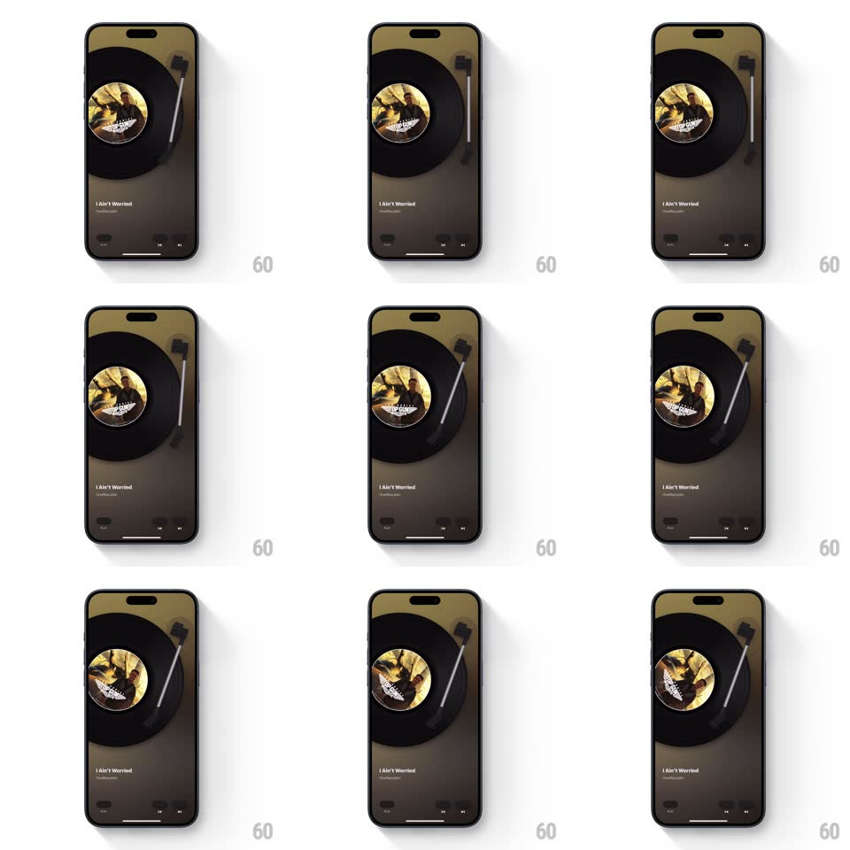

Media
Frame-by-frame

Rebuild this interaction 1:1: MD Vinyl's play/pause - tapping play swings the tonearm onto the stationary record, the disc spins up to speed, and music begins; pausing lifts the arm back to its rest and the record winds down to a stop, the warm album-tinted background holding throughout.

Rebuild this interaction 1:1: MD Vinyl's play/pause - tapping play swings the tonearm onto the stationary record, the disc spins up to speed, and music begins; pausing lifts the arm back to its rest and the record winds down to a stop, the warm album-tinted background holding throughout. ## Integration Integration: stack-agnostic spec - springs given as stiffness/damping, timed motions as duration + curve; map every value to your framework and animation library of choice. ## Scene Skeuomorphic player: large vinyl record (black disc, yellow-toned album label) on the platter, tonearm parked top-right, "I Ain't Worried" title and artist bottom-left, transport controls bottom-right. Background is a soft gradient tinted by the album art. ## Motion spec Pattern: tonearm + spin-up play state machine. - Play: the tonearm swings from its rest onto the record's outer groove (rotate ~18deg, 400ms, ease-in-out with a slight deceleration as the needle approaches the vinyl); a beat after contact (150ms), the disc begins spinning, ramping 0 -> full speed over 900ms (exponential ramp). - The play button morphs to pause (icon crossfade with a 90deg micro-rotation, 200ms). - Pause: the tonearm lifts and returns to rest (rotate back, 350ms) while the disc decelerates to a stop (angular decay, 700ms) - the spin-down outlasts the arm lift, like a real platter. - The background tint breathes subtly while playing (luminance +/-4%, 3s loop) and goes still when paused. ## Calibration - Spin-up and spin-down are ramps, never instant - the platter's mass is the whole metaphor. - Needle contact happens before any rotation - the arm leads, the disc follows. ## Reduced motion Disc starts/stops with a 400ms opacity pulse on the label; arm snaps. ## Don't miss - The disc's label art is askew when stopped - it halts wherever it was, not snapped to upright. - The tonearm has a visible counterweight and headshell - the hardware detail sells the skeuomorphism.